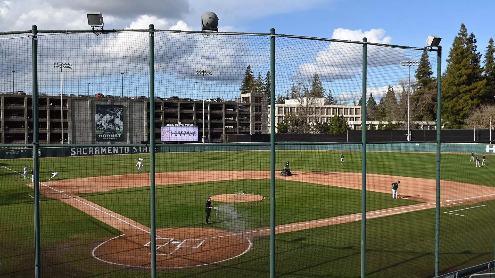

BE SEEN BY THE STAFF
Hornet Baseball Camps are hosted by Sacramento State's college staff. The program has publicly described its camps and showcases as opportunities to display skills in front of the coaching staff.
SACRAMENTO STATE BASEBALL · JOHN SMITH FIELD
Train and compete in front of the Sacramento State baseball staff at the home of the Hornets. Prospect camps and showcases are built to give players a college-baseball environment, instruction from the staff and an opportunity to be evaluated.
Camp availability and dates change throughout the year. Use the official registration page for the current event schedule.

THE CAMP EXPERIENCE
Hornet Baseball Camps are hosted by Sacramento State's college staff. The program has publicly described its camps and showcases as opportunities to display skills in front of the coaching staff.
Camp activity takes place in the same on-campus baseball environment used by the Hornets, connecting evaluation with the program's everyday training setting.
Prospects can see the program's emphasis on game-like training, objective feedback, video, TrackMan, TruMedia, pitch simulation and individual player plans.
Sacramento State is a full Big West member, with baseball beginning Big West competition in 2027. The camp is a front door into the standards of a Division I program entering a new conference era.
PRO DEVELOPMENT HISTORY
Tim Wheeler became the first first-round selection in program history when Colorado chose him 32nd overall in 2009 — still the highest draft position in Sacramento State history.
Carson Latimer, JP Smith and Kade Brown were selected by Cincinnati, Minnesota and the Athletics in the 2025 MLB Draft.
Sacramento State reported in July 2025 that 10 former Hornets had appeared in a Major League game in program history.
By the 2024 draft, Sacramento State had produced a drafted player or professional signee in 18 consecutive seasons dating to 2007; the 2025 class continued that run.
The benchmark pick in Hornet draft history. Wheeler's 32nd-overall selection remains the highest in the program.
A fifth-round selection who reached the Major Leagues in 2017 and became one of the program's most recognizable professional alumni.
The former Hornet outfielder became a seventh-round pick and reached the Major Leagues in 2022.
The right-hander was selected in the sixth round and made his Major League debut with Minnesota in 2025.
RECENT CLASS
The 2025 draft reinforced the program's professional pipeline with one position player and two pitchers selected on day two.
RHP · Cincinnati Reds
IF · Minnesota Twins
RHP · Athletics
MODERN ERA
| Year | Player | Pos. | Organization | Round / Status |
|---|---|---|---|---|
| 2025 | Carson Latimer | P | Cincinnati Reds | 12th · 354 |
| 2025 | JP Smith | IF | Minnesota Twins | 17th · 509 |
| 2025 | Kade Brown | P | Athletics | 20th · 590 |
| 2024 | Gunner Gouldsmith | IF | Oakland Athletics | 19th · 556 |
| 2023 | Noah Takacs | P | Pittsburgh Pirates | Free agent |
| 2022 | Eli Saul | P | Arizona Diamondbacks | 13th · 378 |
| 2021 | Travis Adams | P | Minnesota Twins | 6th · 189 |
| 2021 | Scott Randall | P | Arizona Diamondbacks | 7th · 198 |
| 2020 | Parker Brahms | P | Pittsburgh Pirates | Free agent |
| 2019 | Austin Roberts | P | Pittsburgh Pirates | 8th · 244 |
| 2019 | Tanner Dalton | P | Chicago Cubs | 17th · 522 |
| 2019 | Parker Brahms | P | Los Angeles Dodgers | 27th · 821 |
| 2018 | James Outman | OF | Los Angeles Dodgers | 7th · 224 |
| 2018 | Ian Dawkins | OF | Chicago White Sox | 27th · 798 |
| 2018 | Vinny Esposito | IF | Detroit Tigers | 34th · 1005 |
| 2017 | Justin Dillon | P | Toronto Blue Jays | 10th · 309 |
| 2016 | Tyler Beardsley | P | Minnesota Twins | 16th · 483 |
| 2016 | Sam Long | P | Tampa Bay Rays | 18th · 540 |
| 2016 | Gunner Pohlman | C | Miami Marlins | 26th · 773 |
| 2015 | Nathan Lukes | OF | Cleveland Indians | 7th · 214 |
| 2015 | Sutter McLoughlin | P | Philadelphia Phillies | 22nd · 654 |
| 2015 | Scotty Burcham | IF | Colorado Rockies | 25th · 737 |
| 2015 | Brennan Leitao | P | St. Louis Cardinals | 26th · 791 |
| 2015 | Ty Nichols | P | Tampa Bay Rays | Free agent |
| 2014 | Rhys Hoskins | IF | Philadelphia Phillies | 5th · 142 |
| 2014 | Alex Palsha | P | New York Mets | 27th · 805 |
| 2013 | Justin Higley | OF | Oakland Athletics | 13th · 401 |
| 2013 | Tanner Mendonca | P | Minnesota Twins | 17th · 500 |
| 2013 | Andrew Ayers | IF | Kansas City Royals | 30th · 894 |
| 2012 | R.J. Davis | P | Tampa Bay Rays | 20th · 632 |
| 2012 | Derrick Chung | C/IF | Toronto Blue Jays | 31st · 955 |
| 2011 | Kirby Young | OF | Los Angeles Angels | Free agent |
Draft and signing history in this table follows Sacramento State's official coaching bio. Team names reflect the organization name shown by Sacramento State for the year of selection/signing.
READY TO COMPETE?
Use the official registration portal for current camp dates, availability, age/grade restrictions and event details.